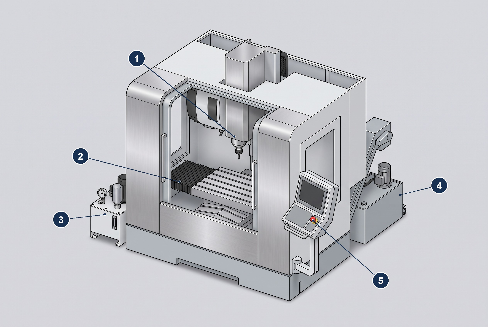
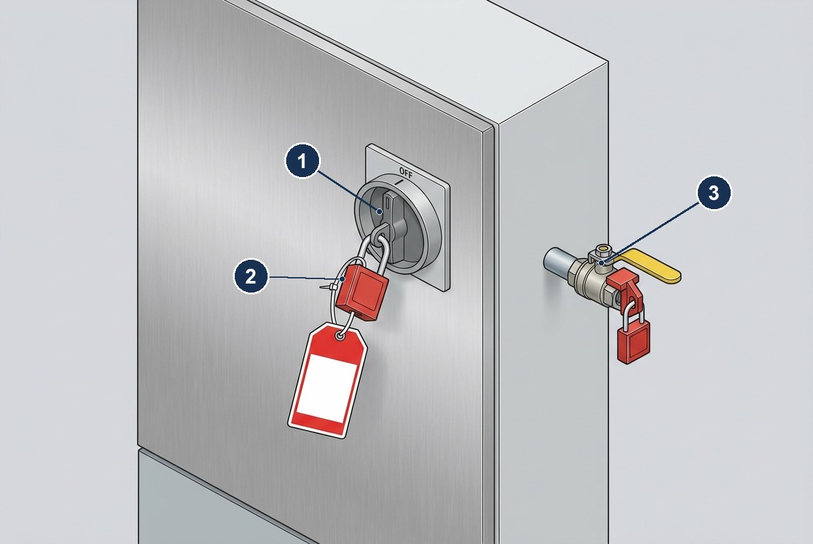
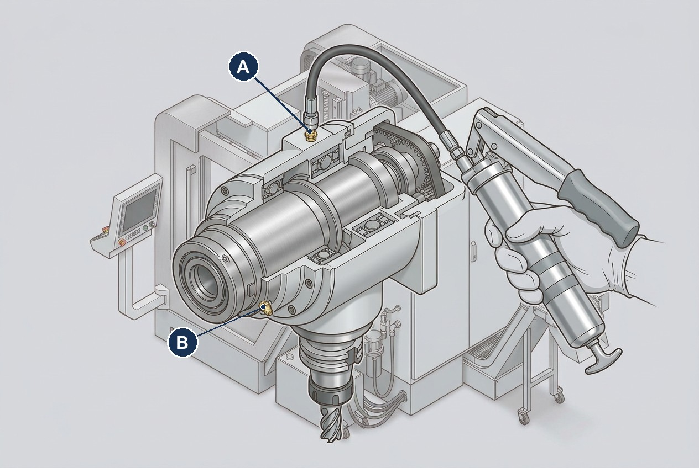
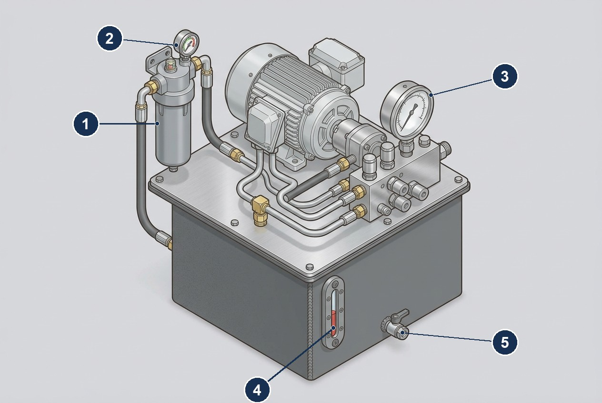

This excerpt illustrates routine maintenance, safety procedures, and fault code handling for a fictional CNC machining center (Model CNC-5000) manufactured by IronClad Machinery GmbH. Prepared as a portfolio sample.
1. Introduction
Manufacturer: IronClad Machinery GmbH, 2210 Werkstrasse, Düsseldorf, Germany Support: support@ironclad-machinery.example · +49-221-555-0199
Intended audience: certified maintenance technicians and supervisors. Scope: routine service, selected fault codes, and recordkeeping templates.
1.1. Machine Overview

-
Spindle assembly — lubrication points A/B (see Service Points); monitor temperature trend after service.
-
Way covers — inspect for tears/binding; verify smooth travel across full stroke.
-
Hydraulic unit — replace filter per schedule; verify pressure within spec at idle and load.
-
Coolant tank and chip conveyor — clean intake screen; check return baffles; maintain 6–8% concentration.
-
Emergency stop (E-Stop) — on the operator panel; see Emergency Shutdown Procedures.
2. Safety Requirements
|
Maintenance must be performed only by trained personnel. Lockout/Tagout (LOTO) is mandatory before opening guards or working near moving parts. Failure to follow these instructions may result in serious injury. |
2.1. PPE (Personal Protective Equipment)
-
Safety helmet and ANSI Z87.1/EN 166 eye protection
-
Cut-resistant gloves appropriate to task
-
Hearing protection (≥ 25 dB SNR)
-
Steel-toe safety footwear
-
Protective clothing free of loose items (no jewelry, secure long hair)
2.2. Lockout/Tagout (LOTO) — Summary
-
Notify affected operators and stop the machine; press E-Stop.
-
Isolate electrical energy: set main disconnect to OFF; apply personal lock and tag.
-
Isolate pneumatic/hydraulic energy: close supply valves; bleed off stored pressure; apply locks/tags.
-
Isolate mechanical/kinetic energy: block or brace moving parts as required.
-
Verify zero energy:
-
Attempt a normal start to confirm isolation (machine must not power).
-
Use appropriate test devices: absence-of-voltage indicator; gauges at 0 pressure.
-
-
Perform maintenance.
-
Remove tools/fixtures, reinstall guards, clear work area.
-
Remove personal locks/tags; restore energy in reverse order; perform a controlled test run.

-
Main electrical disconnect — rotated to OFF.
-
Personal padlock and blank tag — write your name, date, and reason on the tag.
-
Pneumatic supply ball valve — closed, with valve lockout device and padlock.
|
Follow facility-specific procedures in addition to this summary. Reference: OSHA 1910.147 (Control of Hazardous Energy), ISO 16090-1 (Machine tool safety), and applicable local regulations. |
2.3. Emergency Shutdown Procedures
2.3.1. Electrical Emergency
-
Press E-Stop immediately — red mushroom button on control panel and pendant
-
Turn main disconnect to OFF — located at electrical cabinet
-
Do not attempt to restart until hazard is eliminated
-
Call maintenance supervisor and facility emergency response team
-
Evacuate 3-meter radius if sparking, smoke, or unusual odors present
2.3.2. Mechanical Emergency (Collision, Jam, Broken Tool)
-
Press E-Stop — do not attempt to clear obstruction while powered
-
Assess for injury — call medical emergency if personnel involved
-
Isolate all energy sources following full LOTO procedure
-
Document damage with photos before disturbing evidence
-
Contact OEM service for spindle impact assessment if collision occurred
2.3.3. Hydraulic/Coolant Leak
-
Stop machine immediately — E-Stop if leak is active/spraying
-
Contain spill with absorbent materials and drain pans
-
Ventilate area — hydraulic fluid vapors can be hazardous
-
Check for slip hazards — barricade wet areas immediately
-
Report to environmental safety for disposal of contaminated absorbents
2.4. Risk Assessment by Task
| Task | Risk Level | Primary Hazards | Additional Precautions |
|---|---|---|---|
Spindle bearing lubrication |
Medium |
Pinch points, rotating parts |
Ensure spindle stop; use lockable grease gun |
Way cover inspection |
Low |
Sharp edges, pinch points |
Inspect with machine off; wear cut-resistant gloves |
Hydraulic filter change |
High |
Pressurized fluid, chemical exposure |
Full system depressurization; chemical-resistant PPE |
Coolant concentration testing |
Medium |
Chemical exposure, slip hazard |
Eye protection; non-slip footwear; ventilation |
Backlash measurement |
Low |
Moving axes during test |
Use test mode; maintain clear egress path |
Belt tensioning |
High |
Entanglement, stored energy |
Full LOTO; proper belt tension gauge; no loose clothing |
3. Routine Maintenance Schedule
|
Intervals assume two-shift operation in clean, indoor conditions. Increase frequency for abrasive materials (cast iron, composites) or heavy coolant carryout. Record each task in the maintenance log. |
| Interval | Task | Area | Tools/Materials | Notes |
|---|---|---|---|---|
Daily |
Clean chips/swarf; empty conveyors & bins |
Enclosure, conveyors |
Scraper/brush; PPE |
Power off; check for jams at discharge points. |
Daily |
Check coolant level & concentration (6–8%) |
Coolant system |
Refractometer; premix |
Top up with premix; skim tramp oil if present. |
Daily |
Wipe/inspect way covers & wipers |
Axes |
Lint-free cloth |
Replace if torn, dragging, or leaking. |
Weekly |
Lubricate spindle bearings |
Spindle |
Grease gun (NLGI-2) |
2–3 pumps per fitting; do not over-pack. |
Weekly |
Verify auto-lube reservoir; inspect lines |
Ways/ballscrews |
OEM way oil |
Fill to mark; inspect for leaks or blocked metering units. |
Weekly |
Drain air line water separator; check pressure |
Pneumatics |
Drain key; gauge |
Maintain 6–8 bar; replace filter element if saturated. |
Monthly |
Replace hydraulic filter; check ΔP gauge |
Hydraulics |
Wrench set; new element |
Depressurize first; log hours since last change. |
Monthly |
Inspect/tension belts |
Spindle/axes |
Tension gauge |
Replace if frayed/glazed; set to spec. |
Quarterly |
Verify axis backlash & home repeatability |
X/Y/Z |
Dial indicator; test macro |
Compare to spec; adjust or schedule service. |
Quarterly |
Test E-Stops, door interlocks, light curtain |
Safety systems |
Checklist |
Document results; correct faults before production. |
Semi-Annual |
Vibration analysis — spindle & main drives |
Spindle, servo motors |
Accelerometer; spectrum analyzer |
Record baseline at commissioning; ±10% variance requires investigation. |
Semi-Annual |
Thermal imaging survey |
Electrical panels, drives |
Thermal camera |
Max acceptable: 40°C above ambient for electrical connections. |
Annual |
Spindle runout measurement |
Spindle |
Dial indicator (0.001 mm res.) |
Radial: <0.005 mm; axial: <0.003 mm at tool holder taper. |
Annual |
Ballscrew backlash verification |
X/Y/Z axes |
Laser interferometer or dial indicator |
<0.01 mm at mid-stroke; document drift over time. |
Annual |
Coolant system deep clean |
Coolant system |
Cleaning additive; PPE |
Drain, flush, disinfect, refill with fresh premix. |
18 Months |
Way wear measurement |
Linear guides |
Height gauge; reference surfaces |
Max wear: 0.05 mm; replace if approaching limit. |
24 Months |
Geometric accuracy check (ISO 10791-7) |
Machine structure |
Ballbar; laser tracker |
Full 21-point test per ISO standard; contact OEM for acceptance criteria. |
|
After any maintenance affecting motion, run a short test program and verify part accuracy on a gauge block or test coupon. |
3.1. Service Points

-
A — upper bearing housing fitting.
-
B — front bearing housing fitting.
Apply 2–3 pumps of NLGI-2 grease per fitting with the spindle stopped and locked out. Do not over-pack: excess grease raises bearing temperature.

-
Return-line filter housing — replace the element monthly.
-
Differential-pressure (ΔP) indicator — log the reading before and after the filter change.
-
System pressure gauge — verify ≥ 42 bar at idle (see fault E-301).
-
Oil-level sight glass — keep level above the 75% mark.
-
Reservoir drain valve — use for oil sampling and complete drain-down.
4. Fault Codes
| Code | Meaning | Corrective Action | Priority |
|---|---|---|---|
E-101 |
Axis overtravel |
Press RESET; home machine; verify limit switch operation (24VDC expected); check soft limits in parameters. |
Medium |
E-102 |
Spindle overheating |
Stop immediately; verify coolant flow rate >15 L/min; check fan operation; inspect for blocked air passages; allow >30min cooldown. |
High |
E-103 |
Spindle load excessive |
Reduce feed rate by 25%; verify tool sharpness; check workpiece clamping; inspect for chip buildup on cutting tool. |
Medium |
E-104 |
Tool changer fault |
Verify tool pot alignment; check ATC motor operation; inspect tool retention bolts; cycle ATC manually in test mode. |
Medium |
E-105 |
Probe signal lost |
Check probe battery (>6V); verify cable continuity; clean probe tip contacts; test signal with multimeter (5V expected). |
Low |
E-201 |
X-axis servo fault |
Record drive status LEDs; check encoder cable for damage; verify +/-15VDC at drive terminals; reseat drive connectors. |
High |
E-202 |
Y-axis servo fault |
Record drive status LEDs; check encoder cable for damage; verify +/-15VDC at drive terminals; reseat drive connectors. |
High |
E-203 |
Z-axis servo fault |
Record drive status LEDs; check encoder cable for damage; verify +/-15VDC at drive terminals; reseat drive connectors. |
High |
E-204 |
Servo following error |
Check axis for mechanical binding; verify ballscrew lubrication; inspect coupling for wear; reduce rapid traverse rate 20%. |
High |
E-205 |
Encoder communication error |
Inspect encoder cable for cuts/pinch; verify encoder supply voltage 5VDC ±0.25V; clean encoder scale if linear type. |
High |
E-301 |
Hydraulic pressure low |
Verify pump operation; check reservoir level (min 75%); inspect filters for blockage; test pressure at 42 bar minimum. |
High |
E-302 |
Hydraulic temperature high |
Check oil level; verify cooling fan operation; clean heat exchanger fins; oil temp must be <60°C under load. |
Medium |
E-303 |
Tool clamp pressure low |
Test manual tool release; verify hydraulic pressure >40 bar; check tool holder for damage; inspect drawbar assembly. |
High |
E-401 |
Door interlock failure |
Verify all doors fully closed; check interlock switch alignment; test continuity (closed = 0Ω); inspect door seals. |
Medium |
E-402 |
Light curtain interrupted |
Clear obstruction from beam path; clean lens surfaces; verify 24VDC supply; test beam alignment per manual. |
Medium |
E-403 |
Emergency stop activated |
Identify activated E-Stop button; inspect for mechanical damage; reset all E-Stops; verify control circuit continuity. |
High |
E-501 |
Coolant flow insufficient |
Clean intake screen; verify pump operation; check flow rate >15 L/min; inspect nozzles for blockage. |
Medium |
E-502 |
Coolant concentration error |
Test with refractometer; adjust to 6-8% Brix; replace if contaminated; check additive mixing system. |
Low |
E-503 |
Chip conveyor overload |
Clear conveyor jam; inspect for oversized chips; verify conveyor motor current <8A; check drive belt tension. |
Medium |
E-601 |
Pneumatic pressure low |
Verify supply pressure 6-8 bar; drain water separator; check regulator operation; inspect for air leaks with soap solution. |
Medium |
E-602 |
Air filter saturation |
Replace filter element; drain moisture; check compressor operation; verify automatic drain valve function. |
Low |
E-701 |
Control system fault |
Record error details; perform controlled power cycle; check system logs; contact technical support if persistent. |
Critical |
E-702 |
Memory backup failure |
Replace backup battery immediately; verify parameter retention; reload backup parameters if available. |
High |
4.1. After-Clear Checklist
-
Clear alarms; home all axes.
-
Run a short warm-up cycle (spindle + axes); observe temperatures and loads.
-
Verify part accuracy on a test coupon before resuming production.
|
Do not clear and restart repeatedly without investigation. Recurrent or intermittent faults may indicate wiring damage, failing sensors, or drive issues. |
4.2. Escalate to OEM/Service When
-
Spindle temperature rises rapidly at idle or faults recur after cooldown.
-
Servo faults persist after verifying cables, connectors, and supply voltages.
-
Hydraulic pressure fluctuates under steady load or ΔP gauge spikes after filter change.
5. Recordkeeping
5.1. Maintenance Log Template
| Date | Technician | Task | Parts/Materials | Machine Hours | Signature |
|---|---|---|---|---|---|
5.2. Usage Rules
-
Complete entries in permanent ink; no erasures. Use single strike-through for corrections and add initials/date.
-
Record machine hours at the start of each task.
-
Note torque values, measurements, and test results (e.g., coolant 7.2% Brix, backlash 0.006 mm).
-
Attach supporting checklists (E-Stop/door interlock tests) and reference their file IDs in the log.
-
After any safety or motion-related maintenance, run a controlled test program and record results.
5.3. Retention
Maintain maintenance logs and checklists for 5 years (or per facility policy). Provide on request to auditors or OEM service.
6. References & Standards
-
ISO 16090-1 — Machine tool safety
-
OSHA 29 CFR 1910.147 — Control of hazardous energy (LOTO)
-
IEC 60204-1 — Safety of machinery — Electrical equipment of machines
-
ISO 4413 — Hydraulic fluid power — General rules and safety requirements
-
ISO 8573-1 — Compressed air — Contaminants and purity classes
-
NFPA 70 (NEC) — National Electrical Code
Appendix A: Controlled Document Info
Doc ID: CNC-5000-MNT-EX-01
Revision: 0.9 (Portfolio Sample)
Manufacturer: IronClad Machinery GmbH
Figures: machine overview, LOTO isolation points, spindle lubrication points, hydraulic unit service points